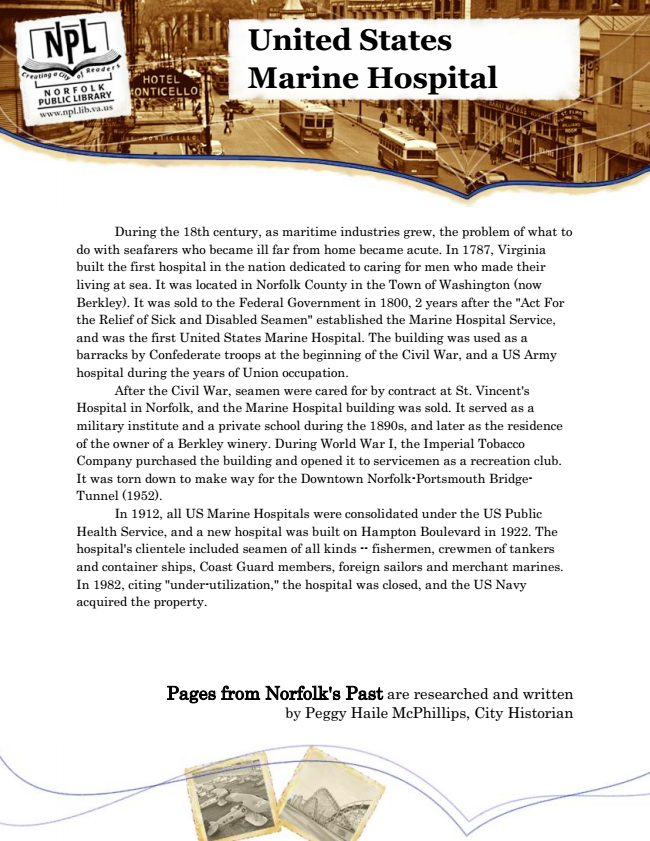

United States Marine Hospital
During the 18th century, as maritime industries grew, the problem of what to do with seafarers who became ill far from home became acute. In 1787, Virginia built the first hospital in the nation dedicated to caring for men who made their living at sea. It was located in Norfolk County in the Town of Washington (now Berkley). It was sold to the Federal Government in 1800, 2 years after the "Act For the Relief of Sick and Disabled Seamen" established the Marine Hospital Service, and was the first United States Marine Hospital. The building was used as a barracks by Confederate troops at the beginning of the Civil War, and a US Army hospital during the years of Union occupation.
After the Civil War, seamen were cared for by contract at St. Vincent's Hospital in Norfolk, and the Marine Hospital building was sold. It served as a military institute and a private school during the 1890s, and later as the residence of the owner of a Berkley winery. During World War I, the Imperial Tobacco Company purchased the building and opened it to servicemen as a recreation club. It was torn down to make way for the Downtown Norfolk-Portsmouth Bridge- Tunnel (1952).
In 1912, all US Marine Hospitals were consolidated under the US Public Health Service, and a new hospital was built on Hampton Boulevard in 1922. The hospital's clientele included seamen of all kinds -- fishermen, crewmen of tankers and container ships, Coast Guard members, foreign sailors and merchant marines. In 1982, citing "under-utilization," the hospital was closed, and the US Navy acquired the property.
Pages from Norfolk's Past are researched and written by Peggy Haile McPhillips, City Historian